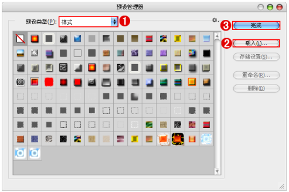
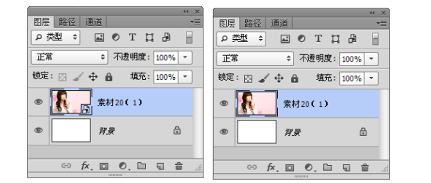

图层的高级操作
图层不透明度
调整图层不透明度
“不透明度”选项控制着整个图层的透明属性，包括图层中的形状、像素以及图层样式。默认图层的“不透明度”为 100%，如果将“不透明度”调整为 50%，可以观察到文字部分变为半透明效果。
调整图层填充透明度
“填充”选项只影响图层中绘制的像素和形状的不透明度。与“不透明度”选项不同，将“填充”调整为 50%，可以观察到文字部分变为半透明效果，而投影和描边效果则没有发生任何变化。
图层的混合模式
说明
所谓图层混合模式是指一个图层与其下图层的色彩叠加方式，通常情况下新建图层的混合模式为正常，除了正常以 外，还有很多种混合模式，它们都可以产生风格迥异的合成效果。在绘画工具和修饰工具的选项栏，以及“渐隐”、“填充”、“描边”命令和“图层样式”对话框中都包含“混合模式”选项。
混合模式的类型
在“图层”面板中选择一个图层，单击面板顶部的下拉按钮 ，在弹出的下拉列表中可以选择一种混合模式。图层 的混合模式分为 6 组，共 27 种。
混合模式练习
使用图层样式
说明
图 层 样 式 和 效 果 的 出 现， 是 Photoshop一 个 划 时 代 的 进 步。 在 Photoshop 中， 图 层样式几乎是制作质感、效果的“绝对利器”，Photoshop 中的图层样式以其使用简单、修改方便的特性广受用户的青睐，尤其是涉及创意文字或是 LOGO 设计时，图层样式更是必不可少的工具。
添加图层样式
如果要为一个图层添加图层样式，可以采用以下 3 种方法来完成。
1、执行“图层 > 图层样式”菜单下的子命令，此时将弹出“图层样式”对话框，调整好相应的设置即可。
2、在“图层”面板中单击“添加图层样式”按钮，在弹出的菜单中选择一种样式即可打开“图层样式”对话框
熟悉“图层样式”对话框
“图层样式”对话框的左侧列出了 10 种样式。样式名称前面的复选框内有标记，表示在图层中添加了该样式。单击一个样式的名称，可以选中该样式，同时切换到该样式的设置面板。在“图层样式”对话框中设置好样式参数以后，单击“确定”按钮即可为图层添加样式，添加了样式的图层右侧会出现fx图标。
显示与隐藏图层样式
如果要隐藏一个样式，可以在“图层”面板中单击该样式前面的眼睛图标 。如果要隐藏某个图层中的所有样式，可以单击“效果”前面的眼睛图标。
修改图层样式
对图层执行“图层 > 图层样式”命令或在“图层”面板中双击该样式的名称，可弹出“图层样式”对话框，进行参数的修改即可。
复制/粘贴图层样式
选择该图层，然后执行“图层 > 图层样式> 拷贝图层样式”命令，或者在图层名称上单击鼠标右键，在弹出的菜单中选择“拷贝图层样式”命令，接着选择目标图层，再执行“图层 > 图层样式 > 粘贴图层样式”命令，或者在目标图层的名称上单击鼠标右键，在弹出的菜单中选择“粘贴图层样式”命令。
按住 Alt 键的同时将“效果”拖拽到目标图层上，可以复制 / 粘贴所有样式。按住 Alt 键的同时将单个样式拖拽到目标图层上，可以复制 / 粘贴该样式。需要注意的是，如果没有按住 Alt 键，则是将样
式移动到目标图层中，原始图层不再有样式。
清除/栅格化图层样式
将某一样式拖拽到“删除图层”按钮上，就可以删除该图层样式。如果要删除某个图层中的所有样式，可以选择该图层，然后执行“图层 > 图层样式 > 清除图层样式”命令，或在图层名称上单击鼠标右键，在弹出的菜单中选择“清除图层样式”命令。
执行“图层 > 栅格化 > 图层样式”命令，即可将当前图层的图层样式栅格化到当前图层中，栅格化的样式部分可以像普通图层的其他部分一样进行编辑处理，但是不再具有可以调整图层参数的功能。
图层样式详解
说明
在 Photoshop 中包含 10 种图层样式，包括斜面和浮雕、描边、内阴影、内发光、光泽、颜色叠加、渐变叠加、图案叠加、外发光与投影样式的效果，从每种图层样式的名称上就能够了解，这些图层样式基本包括“阴影”、“发光”、“凸起”、“光泽”、“叠加”、“描边”等几种属性。当然，除了以上属性，多种图层样式共同使用还可以制作出更加丰富的奇特效果。
使用“样式”面板
认识“样式”面板
执行“窗口 > 样式”命令，可以打开“样式”面板，在“样式”面板中，可以清除为图层添加的样式，也可以新建和删除样式。
将当前图层的样式创建为预设
在“图层”面板中选择一个图层，然后在“样式”面板中单击“创建新样式”按钮，接着在弹出的“新建样式”对话框中为样式设置一个名称，单击“确定”按钮后，新建的样式会保存在“样式”面板的末尾。若在“新建样式”对话框中选中“包含图层混合选项”复选框，创建的样式将具有图层中的混合模式。
删除样式
将样式拖拽到“样式”面板下面的“删除样式”按钮上即可删除该样式。也可以在“样式”面板中按住 Alt 键，当光标变为剪刀形状时，单击需要删除的
存储样式库
将设置好的样式保存到“样式”面板中，也可以在面板菜单中选择“存储样式”命令。打开“存储”对话框，为其设置一个名称，将其保存为一个单独的样式库。
载入样式库
“样式”面板菜单的下半部分是 Photoshop 提供的预设样式库，选择一种样式库，系统会弹出一个提示对话框。 如果单击“确定”按钮，可以载入样式库并替换掉“样式”面板中的所有样式；如果单击“追加”按钮，则该样式库会添加到原有样式的后面。
载入外挂样式
执行“编辑 > 预设管理器”命令，在“预设管理器”窗口中设置“预设类型”为“样式”，单击“载入”按钮，选择 .axl 格式的样式素材文件，最后单击“完成”按钮，即可载入外挂样式。

智能对象图层
创建智能对象
创建智能对象的方法主要有以下 4 种。
1、执行“文件 > 打开为智能对象”命令，可以选择一个图像作为智能对象打开。打开以后，在“图层”面板中的智能对象图层的缩览图右下角会出现一个智能对象图标。
2、打开一个图像，然后执行“文件 > 置入”命令。可以选择一个图像作为智能对象置入到当前文档中。
3、在“图层”面板中选择一个图层，然后执行“图层 > 智能对象 > 转换为智能对象”命令。或者单击右键执行“转换为智能对象”命令。
4、可以将 Adobe Illustrator 中的矢量图形作为智能对象置入到 Photoshop 中。或是将 PDF 文件创建为智能对象。
复制智能对象
在“图层”面板中选择智能对象图层，然后执行“图层 > 智能对象 > 通过拷贝新建智能对象”命令，可以复制一个智能对象。当然，也可以将智能对象拖拽到“图层”面板下面的“创建新图层”按钮上，或者直接按 Ctrl+J 组合键。
导出智能对象
在“图层”面板中选择智能对象，然后执行“图层 > 智能对象 > 导出内容”命令，可以将智能对象以原始置入格式导出。如果智能对象是利用图层来创建的，那么导出时应以 PSB 格式导出。
将智能对象转换为普通图层
执行“图层 > 智能对象 > 栅格化”命令，可以将智能对象转换为普通图层。转换为普通图层以后，原始图层缩览图上的智能对象标志也会消失。
